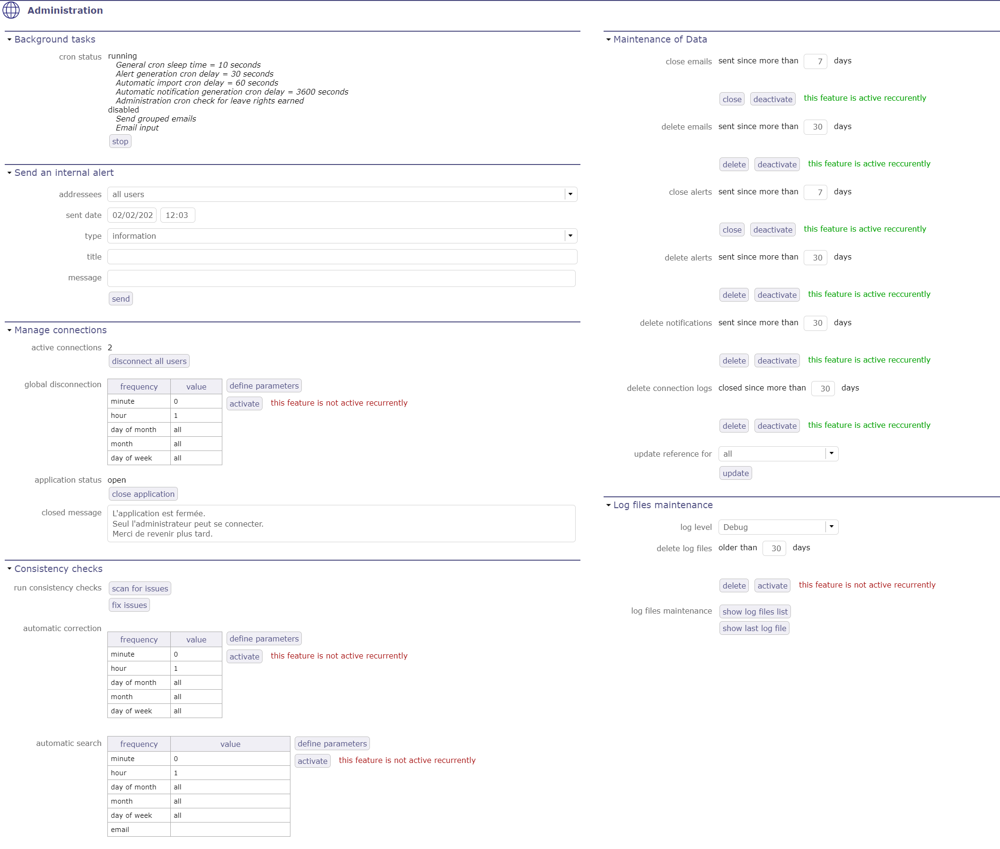
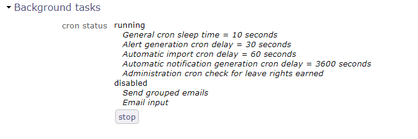
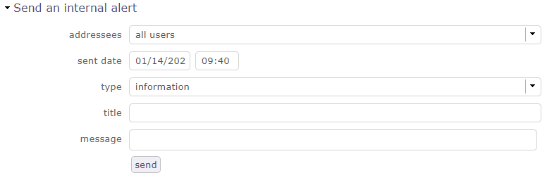
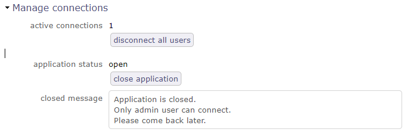
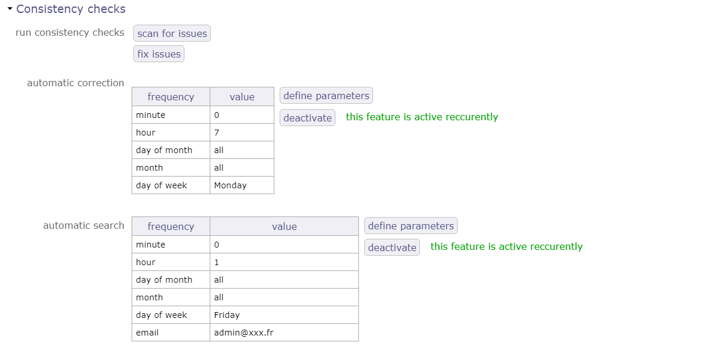
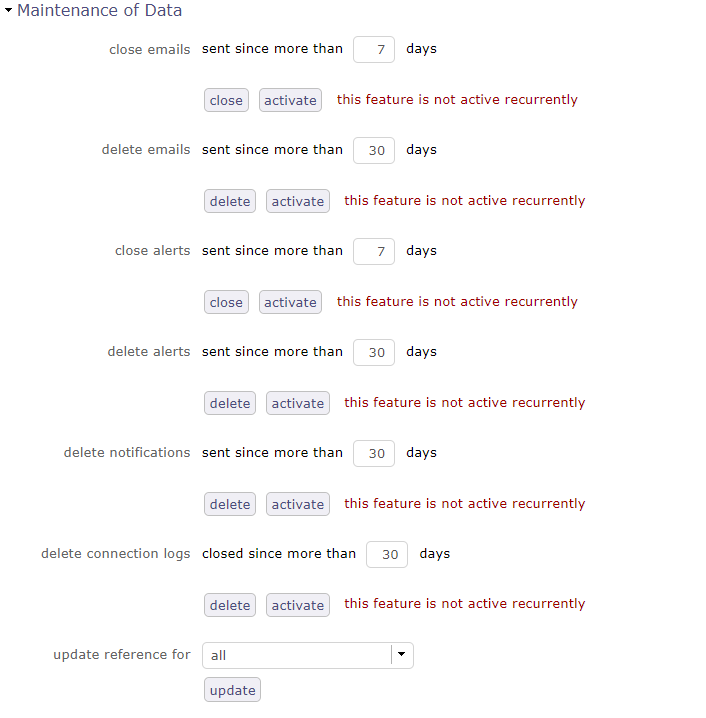
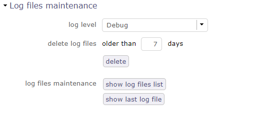
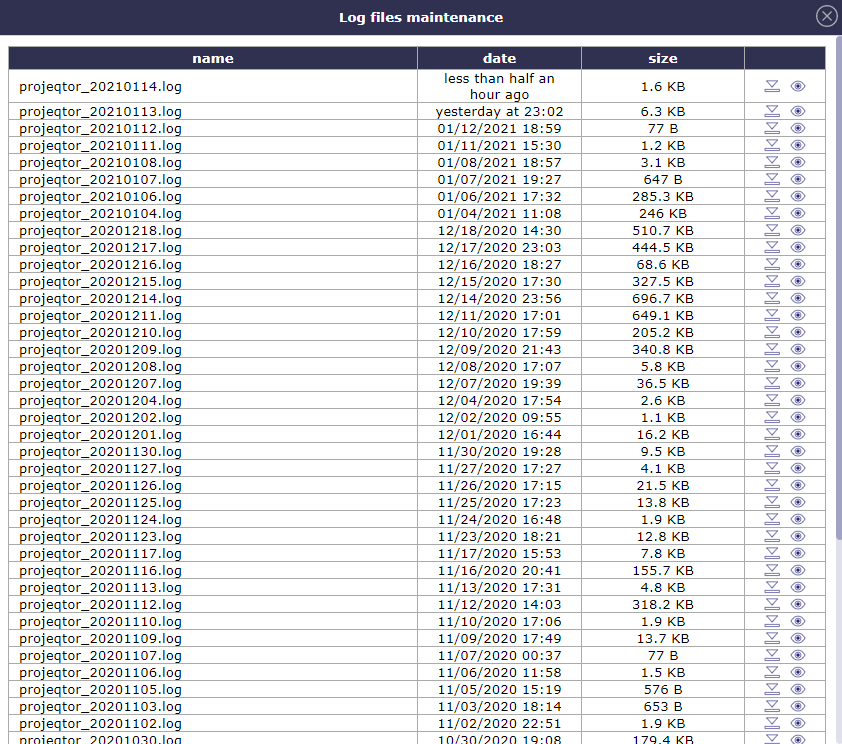
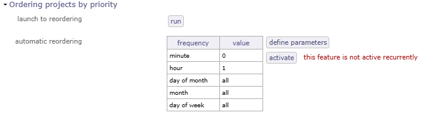

Console d’Administration¶

Écran d’Administration¶
Note
Les écrans décrits ci-dessous sont réservés aux utilisateurs disposant du Profil administrateur.
Les utilisateurs avec d’autres Profils ne peuvent pas y accéder, que des droits d’affichage ou d’accès leur soient accordés ou non.
La console d’Administration permet d’exécuter des tâches d’administration sur l’application.
Tâches en arrière-plan¶
Le CRON¶
Le programme CRON démarre et arrête les tâches en arrière-plan qui traitent et vérifient périodiquement les indicateurs afin de générer les alertes, avertissements ou même les imports automatiques correspondants si nécessaire.
Le Cron fonctions un peu comme un Cron Linux
Ce programme exécute automatiquement des scripts, des commandes ou des logiciels à une date et une heure spécifiées, ou selon un cycle prédéfini.

Les tâches en arrière-plan s’exécutent dans la console d’Administration¶
Vous pouvez activer ou désactiver le CRON directement depuis la barre d’informations.
Bouton d’activation du CRON¶
Comportement¶
* * * * *
│ │ │ │ │ L day of week
│ │ │ │ L month
│ │ │ L day of month
│ │ L hour
│ L minute
Par exemple pour les minutes
* * * * * = means every minute every day
5 * * * * = means every hours at 5 minutes (0:05, 1:05, ... to 23:05)
0 5 * * * = means every day at 5:00
*/5 * * * * = means every 5 minutes every, so will run at 0:00, 0:05, 0:10
0 */2 * * * = means every 2 hours at 0 minutes, so will run at 0:00, 2:00, 4:00
Pour les minutes Ceci s’applique à l’exécution du CRON et doit être défini manuellement.
*/5 : every 5 minutes
*/10 : every 10 minutes
*/15 : every 15 minutes
*/30 : every 30 minutes
Pour les heures Ceci s’applique à l’exécution du CRON et doit être défini manuellement.
*/2 : every 2 hours
*/3 : every 3 hours
*/4 : every 4 hours
*/6 : every 6 hours
*/8 : every 8 hours
*/12 : every 12 hours
Voir aussi
Envoyer une alerte interne¶
Permet d’envoyer une alerte interne aux utilisateurs.

Alerte interne¶
Des alertes internes peuvent être envoyées aux utilisateurs.
Vous pouvez définir une date et une heure d’envoi, des destinataires spécifiques ou tous les utilisateurs, ainsi que le type de message que les utilisateurs recevront : information, alerte ou avertissement…
Cela peut être une bonne pratique pour prévenir les utilisateurs avant un arrêt temporaire de ProjeQtOr pour une mise à jour par exemple.
Une alerte interne peut être envoyée par l’administrateur ou par les indicateurs de surveillance.
Par l’administrateur
L’administrateur peut envoyer une alerte interne via la console d’Administration.
Le message sera reçu par l’utilisateur via une fenêtre pop-up.
Indicateurs de surveillance
Les indicateurs de surveillance envoient uniquement des messages d’avertissement et d’alerte.
Le message contient des informations expliquant l’alerte :
Identifiant et type de l’élément.
Description de l’indicateur.
Valeur cible.
Valeur d’alerte ou d’avertissement.
Voir aussi
Les indicateurs sont définis dans l’écran Indicateurs.
Gérer les connexions¶

Gérer les connexions¶
Permet de forcer la déconnexion des utilisateurs actifs et de fermer l’application aux nouvelles connexions.
Déconnecter tous les utilisateurs
Le bouton Déconnecter tous les utilisateurs permet de déconnecter tous les utilisateurs connectés à l’exception de votre propre connexion.
Le statut de l’application est affiché ci-dessous.
La déconnexion sera effective pour chaque utilisateur lorsque son navigateur vérifiera les alertes à afficher.
Le délai de déconnexion effective des utilisateurs dépendra du paramètre « délai (en secondes) pour vérifier les alertes » dans l’écran Paramètres globaux.
Ouvrir/Fermer l’application
Le bouton Ouvrir/Fermer l'application
Permet d’ouvrir et de fermer l’application.
Lorsque l’application est fermée, le message ci-dessous apparaît sur l’écran de connexion.
Vérification de cohérence¶

Vérification de cohérence¶
sur la séquence WBS : recherche de doublons, trous de séquence, ordre incorrect
sur la présence d’une et une seule ligne « PlanningElement » pour les éléments planifiables
sur la consolidation du travail des Tickets
sur la consolidation du travail sur les Activités
sur les Assignations
Vous pouvez programmer la recherche pour la vérification de cohérence ainsi que son exécution.
Définissez les paramètres de fréquence souhaités et activez le service.
Maintenance des données¶
L’administrateur a la possibilité de :

Maintenance des données¶
Fermer et supprimer les e-mails et alertes envoyés.
Supprimer l’historique des connexions.
Mettre à jour les Références pour tout type d’élément.
Vous pouvez automatiser ces nettoyages en les activant à l’aide des boutons correspondants.
Maintenance des fichiers journaux¶

Maintenance des fichiers journaux¶
L’administrateur a la possibilité de choisir le niveau des fichiers journaux parmi : débogage, trace, script et erreurs.
Supprimer les fichiers sur un nombre de jours donné.
Afficher la liste des journaux
Afficher la liste des derniers journaux.

Liste des fichiers journaux¶
Classement des projets par priorité¶

Classement des projets par priorité¶
Cette fonctionnalité d’administration vous permet de lister les projets par ordre de priorité plutôt que par ordre WBS dans un ensemble de Rapports.
Ce réordonnancement ne peut être effectué qu’au sein du même niveau de projet.
Les Rapports pouvant bénéficier du classement par priorité comprennent :
Plans de charge de travail (hebdomadaires, mensuels),
Rapports de planification (mensuels et annuels, Ressources de projet et Ressources de projet),
Planification mensuelle colorée par Ressource (fixe ou non).
API REST 2¶
ProjeQtOr fournit une API pour interagir avec ses éléments. Elle est fournie sous la forme d’un service web REST.
Les méthodes GET, PUT, POST et DELETE sont utilisées pour les éléments.
Pour des raisons de sécurité, l’API n’est pas activée par défaut.
Générez un fichier .htpasswd pour consulter les sujets connexes sur le web. Un modèle est fourni dans /api/.htpasswd, référençant l’utilisateur projeqtor et le mot de passe projeqtor.
Il est fourni à des fins de test uniquement. Ne l’utilisez pas dans un environnement de production car il exposera l’ensemble de vos données.
Mettez à jour le fichier .htaccess pour spécifier l’emplacement de votre fichier .htpasswd :
AuthUserFile « /pathToFile/.htpasswd » L’emplacement par défaut est le répertoire Apache.
Fonctionnement de l’API¶
L’utilisateur utilisé, celui défini dans le fichier .htpasswd, doit exister en tant qu’utilisateur dans la base de données. Les droits d’accès : lecture, création, mise à jour, suppression, doivent être définis pour cet utilisateur. Cela vous permet de fournir un certain accès à des utilisateurs externes et de contrôler la visibilité qu’ils ont sur vos données.
MÉTHODES
GET : lecture
PUT : création et mise à jour
POST : création, mise à jour
DELETE : suppression
Important
Pour les méthodes PUT, PUSH et DELETE, les données doivent être chiffrées avec l’algorithme AES-256, en utilisant la clé API définie pour l’utilisateur.
L’administrateur doit fournir cette clé API au consommateur de l’API. Vous pouvez utiliser la bibliothèque AESCRT fournie dans le répertoire /external pour le chiffrement.
Les méthodes PUT et PUSH sont similaires et peuvent toutes deux être utilisées pour créer ou mettre à jour des éléments.
La seule différence réside dans la façon d’envoyer les données : sous forme de tableau Post pour POST, sous forme de fichier pour PUT.
La méthode DELETE requiert des données, formatées comme pour un PUT, mais seul l’identifiant est requis.
Pour PUT, POST et DELETE, vous pouvez fournir :
Un élément unique : {« id »: « 1 »,…}
Une liste d’éléments : {« identified »: « id », « elements »: [{« id »: « 1 »,…}, {« id »: « 2 »,…}]}
Le format Json récupéré via GET peut être utilisé pour PUT, POST et DELETE.
Un fichier pour la classe pièce jointe (voir exemples) afin d’ajouter un fichier joint
Requêtes en Json¶
Quelques exemples de requêtes au format Json.
GET
URL: http://myserver/api/{objectclass}/{objectid} - (EX: http://myserver/api/Project/1)
Description complète de l’objet de la classe donnée avec l’identifiant donné
URL: http://myserver/api/{objectclass}/all - (EX: http://myserver/api/Project/all)
Description complète de tous les objets de la classe donnée
URL: http://myserver/api/{objectclass}/filter/{filterid} - (EX: http://myserver/api/Project/filter/1)
Description complète de tous les objets de la classe donnée correspondant au filtre enregistré. L’identifiant du filtre peut être récupéré lors de l’enregistrement du filtre. L’utilisation d’un filtre d’une classe différente peut produire des résultats inattendus
URL: http://myserver/api/{objectclass}/search/{crit1}/{critN} - (EX: http://myserver/api/Activity/search/idProject=1/name like “%error%”)
Description complète de tous les objets de la classe donnée correspondant aux critères donnés. Vous pouvez fournir autant de critères que vous le souhaitez, ils seront inclus dans la clause where avec l’opérateur AND. Contrairement à l’exemple, les critères doivent être « encodés en URL » ; utilisez par exemple la fonction PHP urlencode()
URL: http://myserver/api/{objetcclass}/updated/{start date}/{end date} - (EX: http://myserver/api/Project/updated/20231101000000/20231231235959)
Description complète de tous les objets mis à jour entre la date de début et la date de fin. Le format de date est YYYYMMDDHHMMSS. Date >= « date de début » et date < « date de fin »
POST
URL: http://myserver/api/{objectclass}
EX : Données fournies au format json en tant que valeur POST
Description complète des objets mis à jour ou créés avec 2 champs supplémentaires : apiResult : statut de mise à jour et apiResultMessage
PUT
URL: http://myserver/api/{objectclass}
EX : Données fournies au format json sous forme de fichier
Description complète des objets mis à jour ou créés avec 2 champs supplémentaires : apiResult : statut de mise à jour et apiResultMessage
DELETE
URL: http://myserver/api/{objectclass}
EX : Données fournies au format json sous forme de fichier
Description complète des objets mis à jour ou créés avec 2 champs supplémentaires : apiResult : statut de mise à jour et apiResultMessage
Voici un exemple de code PHP appelant l’API pour une requête PUT et POST (création, mise à jour).
Note
Notez que par défaut l’API ProjeQtOr utilise une clé de chiffrement de 128 bits, c’est pourquoi dans les exemples la fonction AesCtr::encrypt utilise 128 comme dernier paramètre.
Si vous souhaitez le modifier, vous pouvez forcer l’API à utiliser une longueur de clé de chiffrement différente, il suffit d’ajouter dans parameters.php
$aesKeyLength=256; // Les valeurs possibles sont 128, 192, 256
(Le chiffrement 256 bits peut être illégal dans certains pays)
Cette requête liste tous les Tickets :
$fullUrl="http://myserver/api/Ticket/list/all";
$curl = curl_init($fullUrl);
curl_setopt($curl, CURLOPT_HTTPAUTH, CURLAUTH_BASIC);
curl_setopt($curl, CURLOPT_USERPWD, "projeqtor:projeqtor");
curl_setopt($curl, CURLOPT_RETURNTRANSFER, true);
curl_setopt($curl, CURLOPT_SSL_VERIFYPEER, false);
$curl_response = curl_exec($curl);
echo $curl_response;
curl_close($curl);
Avec DELETE permettant de supprimer le Ticket avec l’identifiant #1 :
$fullUrl="http://myserver/api/Ticket";
$data='{"id":"1"}';
$data=AesCtr::encrypt($data, 'ApiKeyForUserProjeqtor', 128);
$curl = curl_init($fullUrl);
curl_setopt($curl, CURLOPT_HTTPAUTH, CURLAUTH_BASIC);
curl_setopt($curl, CURLOPT_USERPWD, "projeqtor:projeqtor");
curl_setopt($curl, CURLOPT_RETURNTRANSFER, true);
curl_setopt($curl, CURLOPT_SSL_VERIFYPEER, false);
curl_setopt($curl, CURLOPT_CUSTOMREQUEST, "DELETE");
curl_setopt($curl, CURLOPT_POST, true);
curl_setopt($curl, CURLOPT_POSTFIELDS, $data);
$curl_response = curl_exec($curl);
echo $curl_response;
curl_close($curl);
Avec PUT et POST (création ou mise à jour) permettant de mettre à jour le nom du Ticket avec l’identifiant #1 :
$fullUrl="http://myserver/api/Ticket";
$data='{"id":"1", "name":"name to be changed for Ticket 1"}';
$data=AesCtr::encrypt($data, 'ApiKeyForUserProjeqtor', 128);
$curl = curl_init($fullUrl);
curl_setopt($curl, CURLOPT_HTTPAUTH, CURLAUTH_BASIC);
curl_setopt($curl, CURLOPT_USERPWD, "projeqtor:projeqtor");
curl_setopt($curl, CURLOPT_RETURNTRANSFER, true);
curl_setopt($curl, CURLOPT_SSL_VERIFYPEER, false);
curl_setopt($curl, CURLOPT_CUSTOMREQUEST, "PUT");
curl_setopt($curl, CURLOPT_POST, true);
curl_setopt($curl, CURLOPT_POSTFIELDS, $data);
$curl_response = curl_exec($curl);
echo $curl_response;
curl_close($curl);
$fullUrl="http://myserver/api/Ticket";
$data='{"id":"1", "name":"name to be changed for Ticket 1"}';
$data=AesCtr::encrypt($data, 'ApiKeyForUserProjeqtor', 256);
$curl = curl_init($fullUrl);
curl_setopt($curl, CURLOPT_HTTPAUTH, CURLAUTH_BASIC);
curl_setopt($curl, CURLOPT_USERPWD, "projeqtor:projeqtor");
curl_setopt($curl, CURLOPT_RETURNTRANSFER, true);
curl_setopt($curl, CURLOPT_SSL_VERIFYPEER, false);
curl_setopt($curl, CURLOPT_CUSTOMREQUEST, "POST");
curl_setopt($curl, CURLOPT_POST, true);
curl_setopt($curl, CURLOPT_POSTFIELDS, $data);
$curl_response = curl_exec($curl);
echo $curl_response;
curl_close($curl);
Avec PUT et POST pour ajouter au Ticket #1 une pièce jointe avec un fichier :
$fullUrl="http://myserver/api/Attachment";
$data='{"id":"", "refType":"Ticket","refId":"1", "fileName":"test.zip","description":"test file","type":"file"}';
$data=AesCtr::encrypt($data, 'ApiKeyForUserProjeqtor', 256);
$curl = curl_init($fullUrl);
curl_setopt($curl, CURLOPT_HTTPAUTH, CURLAUTH_BASIC);
curl_setopt($curl, CURLOPT_USERPWD, "projeqtor:projeqtor");
curl_setopt($curl, CURLOPT_RETURNTRANSFER, true);
curl_setopt($curl, CURLOPT_SSL_VERIFYPEER, false);
curl_setopt($curl, CURLOPT_CUSTOMREQUEST, "POST");
curl_setopt($curl, CURLOPT_POST, true);
curl_setopt($curl, CURLOPT_POSTFIELDS, array('data'=>$data, 'file'=>file_get_contents($filename)));
$curl_response = curl_exec($curl);
echo $curl_response;
curl_close($curl);
$fullUrl="http://myserver/api/Attachment";
$data='{"id":"", "refType":"Ticket","refId":"1", "fileName":"test.zip","description":"test file","type":"file"}';
$data=AesCtr::encrypt($data, 'ApiKeyForUserProjeqtor', 256);
$curl = curl_init($fullUrl);
curl_setopt($curl, CURLOPT_HTTPAUTH, CURLAUTH_BASIC);
curl_setopt($curl, CURLOPT_USERPWD, "projeqtor:projeqtor");
curl_setopt($curl, CURLOPT_RETURNTRANSFER, true);
curl_setopt($curl, CURLOPT_SSL_VERIFYPEER, false);
curl_setopt($curl, CURLOPT_CUSTOMREQUEST, "POST");
curl_setopt($curl, CURLOPT_POST, true);
$postFields =
curl_setopt($curl, CURLOPT_POSTFIELDS, array('data'=>$data, 'file'=>new CURLFile($"test.zip", mime_content_type($"test.zip"),basename($"test.zip")));
$curl_response = curl_exec($curl);
echo $curl_response;
curl_close($curl);
- Notez que les deux structures pour CURLOPT_POSTFIELDS peuvent toutes deux être utilisées pour POST et PUT
PUT avec les deux méthodes enverra les données et le fichier dans l’entrée (php://input) séparés comme un encodage multipart
POST avec la première méthode inclura le contenu du fichier dans un champ POST simple ($_REQUEST[“file”])
POST avec la seconde méthode utilisera la méthode d’encodage multipart ($_FILES[“file”])
La dernière est préférable pour les fichiers volumineux